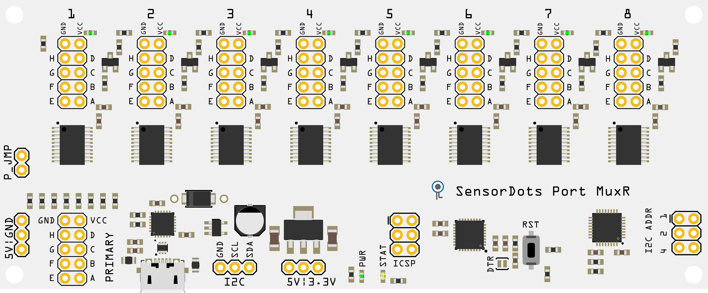
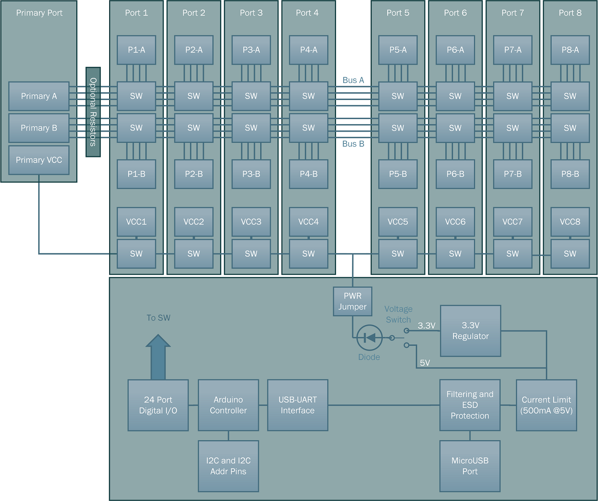

Port MuxR Pinout and Connection

{kind=link}
Switched Ports
The Port MuxR connects a set of pins, to your choice of additional pins on different switchable ports, which are all connected to a shared bus and tied together with a simple control interface.
The control circuitry allows you connect a collection of pins with groups of low resistance FET switches to a common bus. The boards also have a common primary port connection on the bus (see the block diagram below), which is typically used for connecting a master device/programmer (but you can connect up any port to any port as they are all linked via the bus; useful for one-to-many or many-to-one arrangements). Each switchable port has two groups of 4 individual FET switches, giving you up to 16x 4-pin channels, or 8x 8-pin channels.
The two groups of switches correspond to two channels. The first channel (A) consists of pins A, B, C, D and the second channel (B) consists of pins E, F, G, H.
There's also a switchable VCC line per port as well, which allows you to power devices and sensors from a selectable 5/3.3V supply (or optional external supply). Each VCC line is also connected to an LED for status indication.
USB Port
Provides 5V power and USB serial interface. The USB serial interface has the following settings with the standard firmware:
- Baud Rate 57600
- Data Bits 8
- Stop Bits 1
- No Parity
- XON/XOFF Flow Control (or None)
Jumpers, Headers and Buttons
- P_JMP - Jumper used to provide voltage from the voltage select jumper to the VCC pins of the 8 slave ports as well as the primary port.
- I2C - An I2C slave interface to the 328PB microcontroller. There are no pullups on these lines, so you will need pullups for this to function.
- I2C ADDR - Binary values to change the I2C slave address. The I2C base slave address starts at 0x50 and you short a pin to add the binary value to the base address (e.g. no shorts = 0x50, 4+1 shorted = 0x55).
- DTR - a removable and resolderable trace that allows you to disable the reset line from the USB serial interface. When DTR from the serial interface is pulled low, the microcontroller resets. Some terminal applications don't allow modification to the DTR behaviour and this pin can be cut to prevent a reset on connect. It is normally connected from factory.
- 5V|GND - Test or voltage reference pins. The two top pins provide ground and the 5V pin provides 5V (filtered and current limited) from the USB port. If the USB port is not to be used (for example when using as an I2C slave device), this 5V pin can be used to provide power to the board. Please note if using it in this configuration, there is no reverse voltage protection, so please be careful when making connection.
- 5V|3.3V - Voltage select pins. Change the jumper position on these pins to set the VCC voltage provided to the 8 slave ports and the primary port. The center pin is the output, the leftmost pin is 5V and the rightmost pin is 3.3V.
- RST - Reset button for the microcontroller.
- ICSP - Programming header for the 328PB. Usually used for programming the bootloader or debugging. It follows the standard 6 pin AVR ICSP pinout (1 - MISO, 2 - VCC, 3 - SCK, 4 - MOSI, 5 - RST, 6 - GND).
Block Diagram

{kind=link}